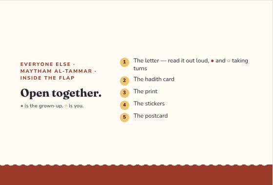
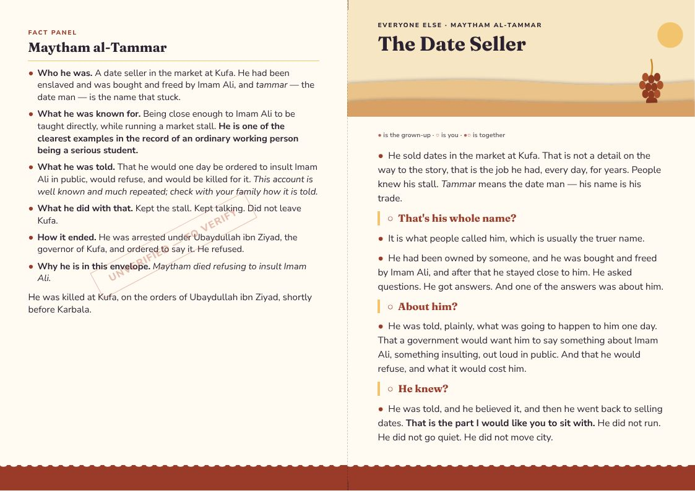
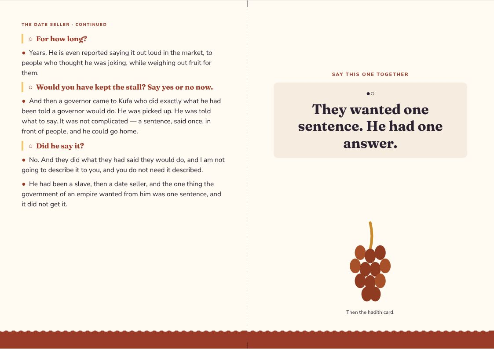
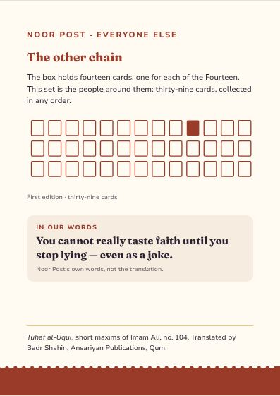
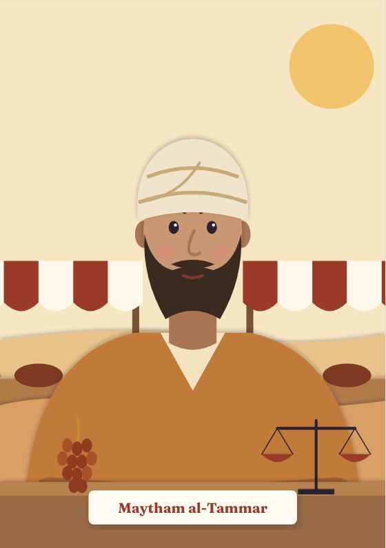
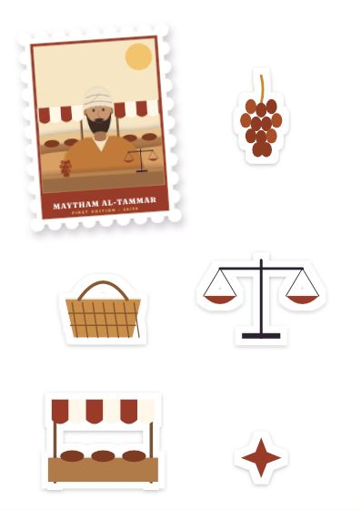
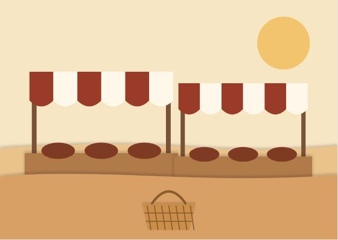

Everyone Else
Maytham al-Tammar
Maytham died refusing to insult Imam Ali.
Inside the flap
Open together.
- The letter — read it out loud, ● and ○ taking turns
- The hadith card
- The print
- The stickers
- The postcard
● is the grown-up. ○ is you.
The Date Seller
● the grown-up · ○ the child · ●○ together
●He sold dates in the market at Kufa. That is not a detail on the way to the story, that is the job he had, every day, for years. People knew his stall. Tammar means the date man — his name is his trade.
○That's his whole name?
●It is what people called him, which is usually the truer name.
●He had been owned by someone, and he was bought and freed by Imam Ali, and after that he stayed close to him. He asked questions. He got answers. And one of the answers was about him.
○About him?
●He was told, plainly, what was going to happen to him one day. That a government would want him to say something about Imam Ali, something insulting, out loud in public. And that he would refuse, and what it would cost him.
○He knew?
●He was told, and he believed it, and then he went back to selling dates. That is the part I would like you to sit with. He did not run. He did not go quiet. He did not move city.
○For how long?
●Years. He is even reported saying it out loud in the market, to people who thought he was joking, while weighing out fruit for them.
○Would you have kept the stall? Say yes or no now.
●And then a governor came to Kufa who did exactly what he had been told a governor would do. He was picked up. He was told what to say. It was not complicated — a sentence, said once, in front of people, and he could go home.
○Did he say it?
●No. And they did what they had said they would do, and I am not going to describe it to you, and you do not need it described.
●He had been a slave, then a date seller, and the one thing the government of an empire wanted from him was one sentence, and it did not get it.
●○They wanted one sentence. He had one answer.
Letter, reverse
MAYTHAM AL-TAMMAR
●Who he was. A date seller in the market at Kufa. He had been enslaved and was bought and freed by Imam Ali, and tammar — the date man — is the name that stuck.
●What he was known for. Being close enough to Imam Ali to be taught directly, while running a market stall. He is one of the clearest examples in the record of an ordinary working person being a serious student.
●What he was told. That he would one day be ordered to insult Imam Ali in public, would refuse, and would be killed for it. This account is well known and much repeated; check with your family how it is told.
●What he did with that. Kept the stall. Kept talking. Did not leave Kufa.
●How it ended. He was arrested under Ubaydullah ibn Ziyad, the governor of Kufa, and ordered to say it. He refused.
●Why he is in this envelope. Maytham died refusing to insult Imam Ali.
He was killed at Kufa, on the orders of Ubaydullah ibn Ziyad, shortly before Karbala.
Hadith card · First Edition 10 / 39
No one will find the true taste of faith before he neglects telling lies whether seriously or jokingly.
Tuhaf al-Uqul, short maxims of Imam Ali, no. 104 · trans. Badr Shahin
A saying of Imam Ali, matched to truthfulness when it costs.
The design
Everyone Else — one style for the line
Every companion envelope shares one style, so the thirty-nine belong together: each front carries its person as a stamp. Every item at true size → · Print PDF
















The artwork fixes composition, colour and medium for every item; final illustration is still to be commissioned. The fact panel is still to verify.